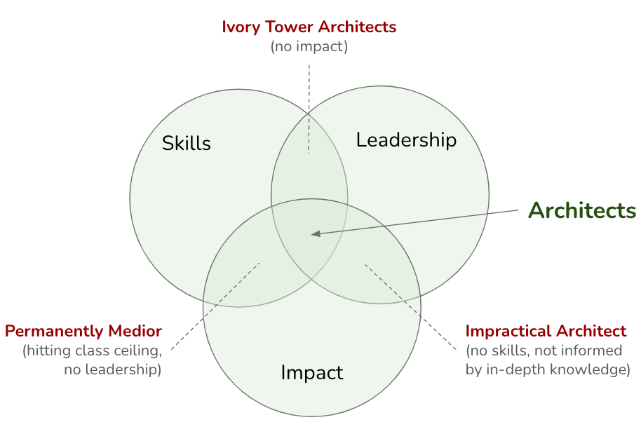

On Being Architect: Introduction

IN THIS SECTION, YOU WILL: Get an overview of lessons I learned on what it means to be an architect in practice.
In this section, we begin the second part of this book, where theory meets practice. The first part introduced the Grounded Architecture framework, including its principles, goals, and underlying philosophy. Now, we will focus on real-world guidance, providing practical tools, ideas, and inspiration to help you apply the framework within your organization.
This part is aimed at IT professionals who are looking to build or improve their architecture practice, especially in complex environments where one-size-fits-all models often fall short. Instead of prescribing a rigid method, we offer a flexible toolbox of strategies, examples, and insights that can be adapted to your unique context. Our goal is to help you develop a resilient and effective architectural practice that truly fits your organization.
We will start by exploring a fundamental question: What does it mean to be an architect in IT? The role is multidimensional, requiring not only technical expertise but also strategic vision, communication skills, and leadership. Like a Swiss Army knife, an effective architect must be versatile, capable of shifting between coding, business discussions, and mentoring. This chapter will provide a deeper understanding of the role, highlighting what architects do, what contributes to their success, and how to grow within the profession.
Whether you are just starting your journey or you are already deep into your architectural career, the upcoming chapters are designed to offer actionable insights and meaningful reflections. This is not about buzzwords or stereotypes; it is about what it actually takes to succeed in a role that is becoming increasingly crucial every day.
Growing as an Architect
Drawing inspiration from Gregor Hohpe’s book The Software Architect Elevator, we will explore how architects grow and evolve. Hohpe introduces a useful metaphor: the three-legged stool of architect development, which consists of:
- Skills – the ability to understand and work with both technology and people,
- Impact – making a measurable difference in the business,
- Leadership – guiding others, setting direction, and raising standards.
For an architect to thrive, all three legs must be strong. If one is too short, the stool tips over:
- If you have skills and impact but lack leadership, you may hit a glass ceiling, unable to increase your influence.
- If you have leadership without real impact, you risk becoming an ivory tower architect, disconnected from what truly matters.
- If you have impact and leadership but lack skills, your decisions may be impractical or uninformed, missing critical technical depth.
 Figure 1: Architects must have a minimal “length” of all “legs” to be successful.
Skills: Building a Strong Foundation
At its core, architecture relies on expertise—both technical and interpersonal. A successful architect combines in-depth knowledge with strong abilities to communicate, collaborate, and influence.
A well-rounded skill set typically includes:
- Technical depth: proficiency in modern cloud platforms as well as legacy systems,
- Communication skills: the ability to reassure nervous developers and translate business language into actionable technology plans,
- Product understanding: insight into how systems provide value,
- Business insight: an understanding of priorities and trade-offs, often represented in spreadsheets,
- Decision-making: the capability to navigate complexity confidently, even when there isn’t a clear answer.
For a more detailed exploration, please refer to the Skills section.
Impact: Delivering Real Value
Architects play a crucial role in driving meaningful change. In a business context, this means that your work should create measurable value, whether through cost savings, faster delivery, improved systems, or smarter strategies.
Examples of impactful architecture include:
- Bridging the gap between business goals and technical execution.
- Streamlining processes to boost team productivity.
- Making systems more efficient through smart cost optimizations.
- Developing technology strategies that align with long-term goals.
- Supporting product delivery, enabling teams to move faster with fewer obstacles.
- Fostering innovation, not only in ideas but also in execution.
For practical examples, please see the Impact section.
Leadership: Raising the Bar
Architects do more than just design systems—they lead people. Senior architects not only influence the technology stack but also help shape the culture, impacting how teams think and work.
Key leadership traits include:
- Acting as a role model, setting high standards for both technology and teamwork.
- Leading high-stakes initiatives that address core business challenges.
- Contributing to the tech community through writing, speaking, or open-source projects.
- Fostering a culture of continuous learning and improvement.
- Mentoring future architects, aiding them in avoiding common pitfalls and accelerating their growth.
For experienced architects, leadership isn’t optional—it’s essential. For more insights, see Leadership Traits.
Thinking Like an Architect
In large organizations, architects act as the connective tissue—bridging strategy and execution, business and technology, as well as teams and outcomes. This role is often referred to as “organizational superglue” because architects unify the various components of a complex system.
However, being the glue doesn’t mean being invisible. It involves being intentional—balancing vision with pragmatism and ambition with realism. Architects must navigate uncertainty, ask difficult questions, and bring together diverse perspectives. Additionally, they need to master the delicate balance of:
- Curiosity: remaining open to new ideas,
- Doubt: questioning assumptions,
- Vision: striving towards a desired future,
- Skepticism: ensuring that ideas are grounded in reality.
This mindset enables architects to lead sustainable change, rather than merely pursuing exciting innovation. For more insights, see Superglue and Balancing Forces.
Career Growth for Architects
Most successful architects start their careers as engineers. This hands-on experience provides the technical foundation necessary for making high-level decisions later on. As architects advance in their careers, they extend their influence—initially across teams, then departments, and eventually throughout the entire organization.
Over time, architects may transition into roles such as:
- Principal Architect – leading complex initiatives,
- Engineering Director – managing teams and setting the technical direction,
- CTO (Chief Technology Officer) – aligning technology with the overall business strategy at the highest level.
Career growth involves more than just acquiring knowledge—it also means broadening your perspective, deepening professional relationships, and learning to communicate effectively in both technical and business contexts.
For more information on how architects evolve in their careers, see Architects’ Career Paths.
On Being Architect |
|||
| ← | → | ||